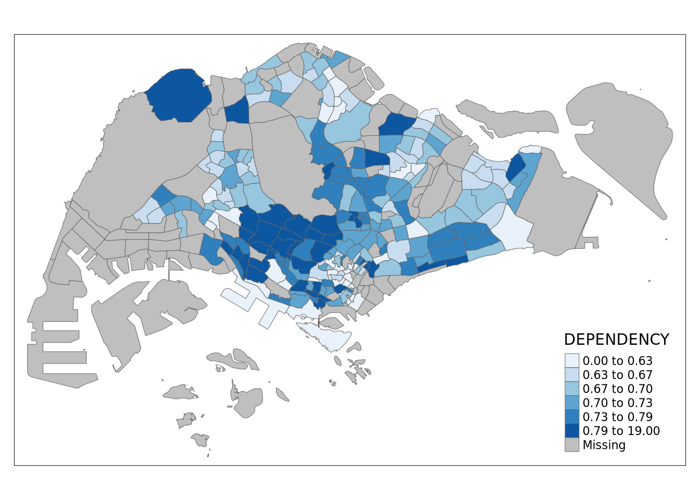
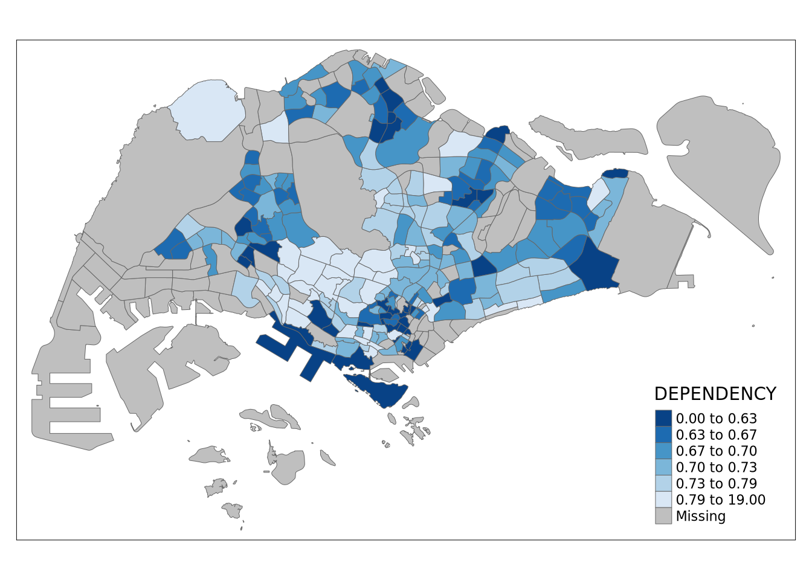
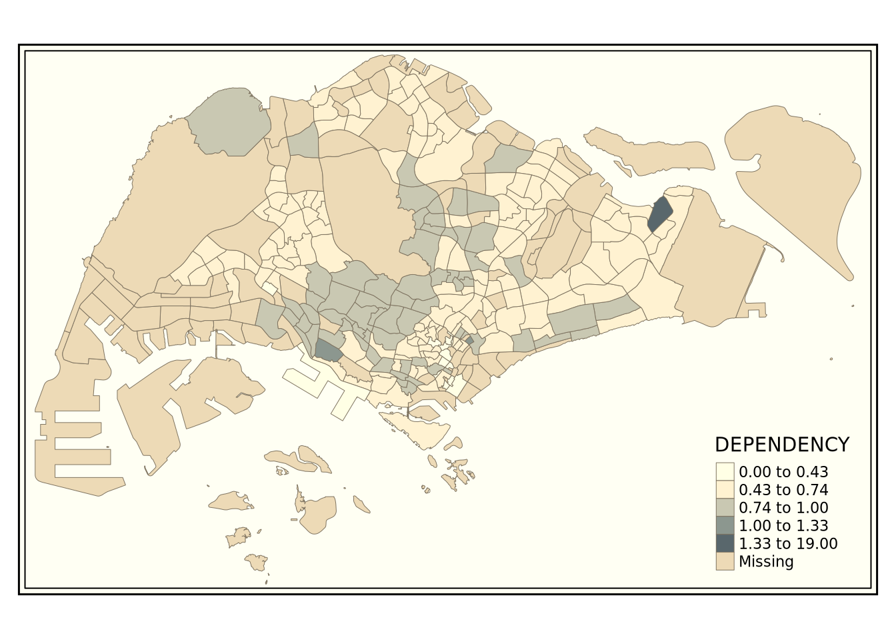
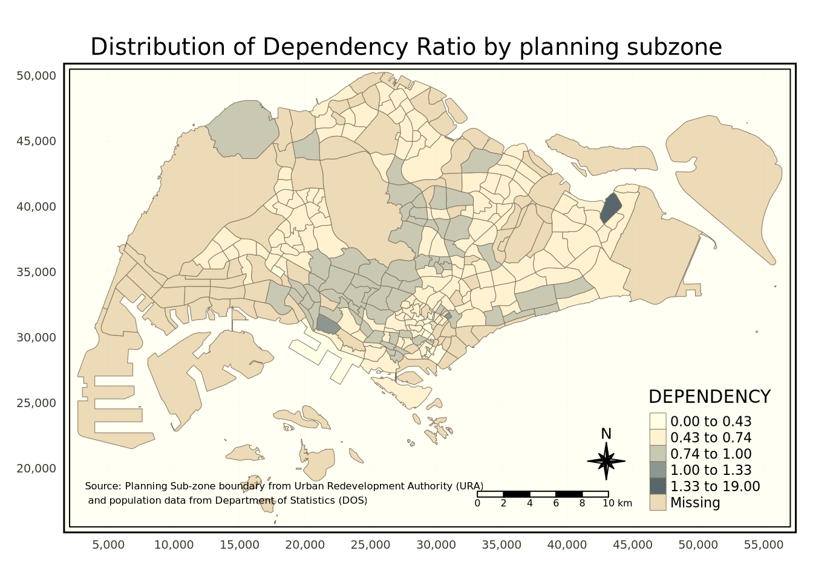
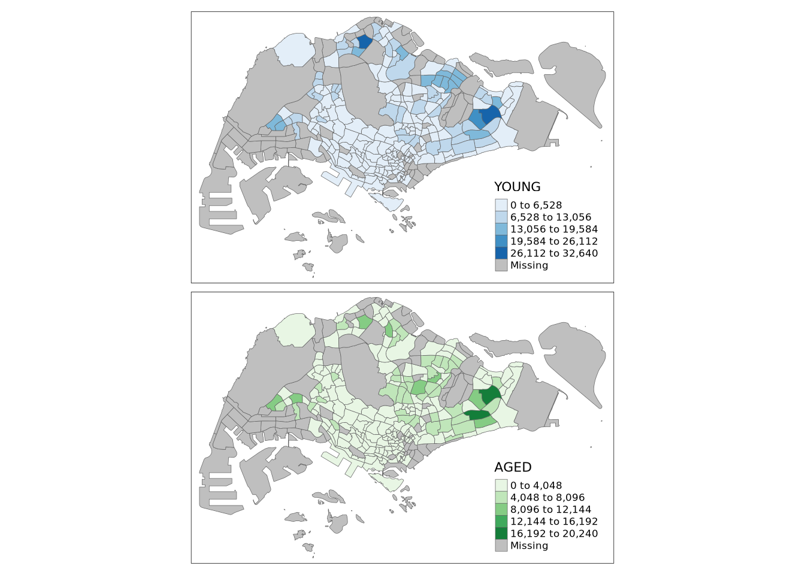
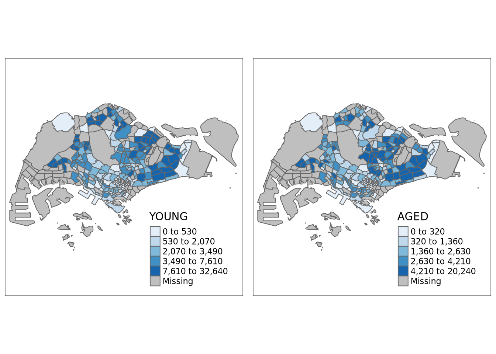
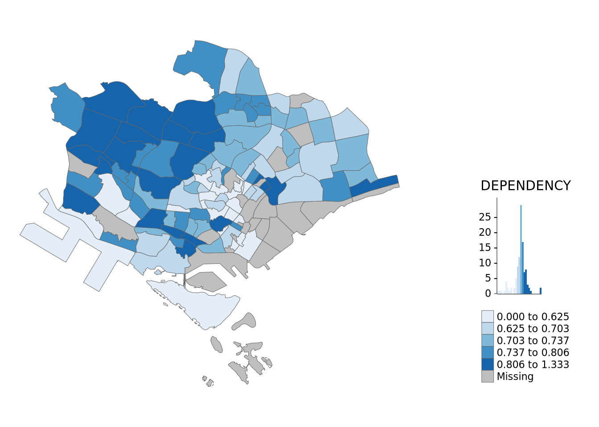

pacman::p_load(sf, tmap, tidyverse)Hands-On Exercise 2
hands_on_exercise
Thematic Mapping and Geovisualisation with R
1 Overview
Thematic mapping is the process of visualising the properties of geographic features through the use of map symbols. These properties may not be naturally visible, such as population, temperature, crime rate, and property prices. As such, thematic mapping helps to visualise them better.
When exploring geographical data, we often use visual techniques to explore and interpret the data. Geovisualisation enables us to visualise the data better.
1.1 Tools
In this exercise, the main objective will be to plot functional and turthful choropleth maps, primarily using the tmap package. Apart from tmap, the following R packages will also be used:
readrfor importing of delimited text filestidyrfor tidying of datadplyrfor wrangling of datasffor handling of geospatial data
The packages can be installed and loaded via pacman as shown below.
Note: readr, tidyr, dplyr can be found in the tidyverse package. Loading the tidyverse package automatically loads the other relevant packages.
2 Data
2.1 Data acquisition
Two datasets will be utilised in this exercise:
Master Plan 2014 Subzone Boundary (Web) (
MP14_SUBZONE_WEB_PL), which is in the ESRI shapefile format. It contains geospatial data of the geographical boundary of Singapore at the planning subzone level, based on the URA Master Plan 2014. It can be downloaded from data.gov.sg.Singapore Residents by Planning Area / Subzone, Age Group, Sex and Type of Dwelling for June 2011-2020 (
respopagesextod2011to2020.csv), which is in the csv format. It contains aspatial data, including thePAandSZfields which act as unique identifiers to geocode in theMP14_SUBZONE_WEB_PLshapefile. It can be downloaded from the Department of Statistics, Singapore.
2.2 Importing of geospatial data
As per the previous exercise, we will be using the sf package for importing of the geospatial data.
master_plan_subzone_boundary <- st_read(
dsn = "data/geospatial",
layer = "MP14_SUBZONE_WEB_PL"
)Reading layer `MP14_SUBZONE_WEB_PL' from data source
`/home/swoh/local/Y3S1-IS415/website/hands_on_exercises/exercise_2/data/geospatial'
using driver `ESRI Shapefile'
Simple feature collection with 323 features and 15 fields
Geometry type: MULTIPOLYGON
Dimension: XY
Bounding box: xmin: 2667.538 ymin: 15748.72 xmax: 56396.44 ymax: 50256.33
Projected CRS: SVY21We can examine the contents by calling the variable name itself.
master_plan_subzone_boundarySimple feature collection with 323 features and 15 fields
Geometry type: MULTIPOLYGON
Dimension: XY
Bounding box: xmin: 2667.538 ymin: 15748.72 xmax: 56396.44 ymax: 50256.33
Projected CRS: SVY21
First 10 features:
OBJECTID SUBZONE_NO SUBZONE_N SUBZONE_C CA_IND PLN_AREA_N
1 1 1 MARINA SOUTH MSSZ01 Y MARINA SOUTH
2 2 1 PEARL'S HILL OTSZ01 Y OUTRAM
3 3 3 BOAT QUAY SRSZ03 Y SINGAPORE RIVER
4 4 8 HENDERSON HILL BMSZ08 N BUKIT MERAH
5 5 3 REDHILL BMSZ03 N BUKIT MERAH
6 6 7 ALEXANDRA HILL BMSZ07 N BUKIT MERAH
7 7 9 BUKIT HO SWEE BMSZ09 N BUKIT MERAH
8 8 2 CLARKE QUAY SRSZ02 Y SINGAPORE RIVER
9 9 13 PASIR PANJANG 1 QTSZ13 N QUEENSTOWN
10 10 7 QUEENSWAY QTSZ07 N QUEENSTOWN
PLN_AREA_C REGION_N REGION_C INC_CRC FMEL_UPD_D X_ADDR
1 MS CENTRAL REGION CR 5ED7EB253F99252E 2014-12-05 31595.84
2 OT CENTRAL REGION CR 8C7149B9EB32EEFC 2014-12-05 28679.06
3 SR CENTRAL REGION CR C35FEFF02B13E0E5 2014-12-05 29654.96
4 BM CENTRAL REGION CR 3775D82C5DDBEFBD 2014-12-05 26782.83
5 BM CENTRAL REGION CR 85D9ABEF0A40678F 2014-12-05 26201.96
6 BM CENTRAL REGION CR 9D286521EF5E3B59 2014-12-05 25358.82
7 BM CENTRAL REGION CR 7839A8577144EFE2 2014-12-05 27680.06
8 SR CENTRAL REGION CR 48661DC0FBA09F7A 2014-12-05 29253.21
9 QT CENTRAL REGION CR 1F721290C421BFAB 2014-12-05 22077.34
10 QT CENTRAL REGION CR 3580D2AFFBEE914C 2014-12-05 24168.31
Y_ADDR SHAPE_Leng SHAPE_Area geometry
1 29220.19 5267.381 1630379.3 MULTIPOLYGON (((31495.56 30...
2 29782.05 3506.107 559816.2 MULTIPOLYGON (((29092.28 30...
3 29974.66 1740.926 160807.5 MULTIPOLYGON (((29932.33 29...
4 29933.77 3313.625 595428.9 MULTIPOLYGON (((27131.28 30...
5 30005.70 2825.594 387429.4 MULTIPOLYGON (((26451.03 30...
6 29991.38 4428.913 1030378.8 MULTIPOLYGON (((25899.7 297...
7 30230.86 3275.312 551732.0 MULTIPOLYGON (((27746.95 30...
8 30222.86 2208.619 290184.7 MULTIPOLYGON (((29351.26 29...
9 29893.78 6571.323 1084792.3 MULTIPOLYGON (((20996.49 30...
10 30104.18 3454.239 631644.3 MULTIPOLYGON (((24472.11 29...Note: if we want to see all rows, we can define the row limit as such.
# print(master_plan_subzone_boundary, n = Inf)2.3 Importing of aspatial data
Likewise, for aspatial data, we will be using the readr package for importing.
find("read_csv")[1] "package:readr"population_data <- read_csv(
"data/aspatial/respopagesextod2011to2020.csv",
)Rows: 984656 Columns: 7
── Column specification ────────────────────────────────────────────────────────
Delimiter: ","
chr (5): PA, SZ, AG, Sex, TOD
dbl (2): Pop, Time
ℹ Use `spec()` to retrieve the full column specification for this data.
ℹ Specify the column types or set `show_col_types = FALSE` to quiet this message.2.4 Data preparation
Before we can prepare a thematic map, we will need to prepare a data table for the year of choice. In this case, we will be preparing the map for the year 2020. The data table will include the variables:
PA: geocode identifierSZ: geocode identifierYOUNG: contains age groups of 0 to 4, until age groups of 20 to 24ECONOMY_ACTIVE: contains age groups of 25 to 29, until age groups of 60 to 64AGED: contains age groups of 65 and aboveTOTAL: all age groupsDEPENDENCY: the ratio between theYOUNGandAGEDagainst theECONOMY_ACTIVEgroup
2.5 Data wrangling
In this section, we will be performing data wrangling and transforming the data using functions from the tidyr and dplyr package.
find("pivot_wider")[1] "package:tidyr"find("mutate")[1] "package:dplyr"find("filter")[1] "package:dplyr" "package:stats"find("group_by")[1] "package:dplyr"find("select")[1] "package:dplyr"population_data_2020 <- population_data %>%
# Filter by field of "Time" for the year 2020
filter(`Time` == 2020) %>%
# Groups up all entries with the same PA, SZ which are geocode identifiers and AG, the age group
group_by(`PA`, `SZ`, `AG`) %>%
# Summarise allows for calculation of statistics for the entire group
# Used here to find the total population for a group
summarise(`GROUP_POP` = sum(`Pop`)) %>%
# Removes the grouping, leaving the GROUP_POP field still tagged on to each entry
ungroup() %>%
# Collects the entries with the same AG field and combine their GROUP_POP values
pivot_wider(
names_from = `AG`,
values_from = `GROUP_POP`
) %>%
# Create the YOUNG field to sum up the values from the appropriate age groups
# between 0 - 24
mutate(
# The columns from column 3 to 19 represent the different age groups
# We use rowSums to sum the values across selected columns
# WARN: unlike many other programming languages, R is one-indexed, not zero-indexed
# WARN: the age group in the columns have been sorted lexigraphically, hence the need
# to add the the additional 14th column
`YOUNG` =
rowSums(.[3:6]) +
rowSums(.[14])
) %>%
# Create the ECONOMY_ACTIVE field for age groups between 25 - 64
mutate(
`ECONOMY_ACTIVE` =
rowSums(.[7:13]) +
rowSums(.[15])
) %>%
# Likewise create for AGED
mutate(
`AGED` = rowSums(.[16:22])
) %>%
# Sum up all age group data
mutate(
`TOTAL` = rowSums(.[3:22])
) %>%
# Calculate dependency as explained above
mutate(
`DEPENDENCY` = (`YOUNG` + `AGED`) / `ECONOMY_ACTIVE`
) %>%
# View selected fields
select(
`PA`, `SZ`, `YOUNG`,
`ECONOMY_ACTIVE`, `AGED`, `TOTAL`,
`DEPENDENCY`
)`summarise()` has grouped output by 'PA', 'SZ'. You can override using the
`.groups` argument.population_data_2020# A tibble: 332 × 7
PA SZ YOUNG ECONOMY_ACTIVE AGED TOTAL DEPENDENCY
<chr> <chr> <dbl> <dbl> <dbl> <dbl> <dbl>
1 Ang Mo Kio Ang Mo Kio Town Centre 1290 2760 2050 6100 1.21
2 Ang Mo Kio Cheng San 5640 16460 11690 33790 1.05
3 Ang Mo Kio Chong Boon 5100 15000 11570 31670 1.11
4 Ang Mo Kio Kebun Bahru 4620 13010 9740 27370 1.10
5 Ang Mo Kio Sembawang Hills 1880 3630 3190 8700 1.40
6 Ang Mo Kio Shangri-La 3330 9050 6940 19320 1.13
7 Ang Mo Kio Tagore 1940 4480 3470 9890 1.21
8 Ang Mo Kio Townsville 4190 11950 9290 25430 1.13
9 Ang Mo Kio Yio Chu Kang 0 0 0 0 NaN
10 Ang Mo Kio Yio Chu Kang East 1110 2410 1860 5380 1.23
# ℹ 322 more rows2.5.1 Joining geospatial and aspatial data
As mentioned above, the PA and SZ fields from the aspatial data will act as geocode identifiers which correspond to that in the geospatial data. However, we will have to transform the values of the PA and SZ field into uppercase to match that of the geospatial data.
population_data_2020 <- population_data_2020 %>%
# Alter the values using the specified function
mutate_at(
.vars = vars(`PA`, `SZ`),
.funs = list(toupper)
) %>%
# Filter out to remove all entries without anyone in the `ECONOMY_ACTIVE`
# group as it results in division by 0 -> NaN from the previous calculation
filter(
`ECONOMY_ACTIVE` > 0
)We then perform the joining usin gthe dplyr package, using the SUBZONE_N from the geospatial data and SZ from the aspatial data to match.
find("left_join")[1] "package:dplyr"master_plan_subzone_population_2020 <- left_join(
master_plan_subzone_boundary,
population_data_2020,
by = c("SUBZONE_N" = "SZ")
)Note: a left join is performed, hence order matters to ensure that the resulting data contains all the subzones, with the added population data on top.
We can then save the data into an rds file for reading from in the future.
find("write_rds")[1] "package:readr"write_rds(
master_plan_subzone_population_2020,
"data/rds/master_plan_subzone_population_2020.rds"
)3 Choropleth mapping
Now that we have all the necessary data prepared, we are ready to start mapping! Remember that choropleth mapping involves the symbolisation of enumeration units, such as countries, provinces, states, countires or census units, utilising area patterns or graduated colours.
Using the tmap package, we have two choices: - qtm: for plotting of a thematic map quickly - Plotting a highly customisable thematic map using tmap elements
3.1 Quick plot
The easiest and fastest method of plotting the map can be done using the qtm function from tmap. While it may not be as customisable, it gives a good default and requires not much configuration, making it useful for quick visualisations.
Note: tmap can be set for either plot for static maps or view for interactive ones.
Note: qtm accepts the fill argument to set the data to colour in.
find("qtm")[1] "package:tmap"tmap_mode("plot")tmap mode set to plottingqtm(
master_plan_subzone_population_2020,
fill = "DEPENDENCY"
)
3.2 Custom maps
While qtm is great for most cases, sometimes we want to draw some high quality maps and have more control over the properties. In order to do that, we can still utilise tmap’s capabilities.
# The base, background plot
tm_shape(master_plan_subzone_population_2020) +
# Colour in the data
tm_fill(
"DEPENDENCY",
style = "quantile",
palette = "Blues",
title = "Dependency ratio"
) +
# Set properties
tm_layout(
main.title = "Distribution of Dependency Ratio by planning subzone",
main.title.position = "center",
main.title.size = 1.2,
legend.height = 0.45,
legend.width = 0.35,
frame = TRUE
) +
# Add border
tm_borders(alpha = 0.5) +
# Add compass
tm_compass(
type = "8star",
size = 2
) +
# Add scale
tm_scale_bar() +
# Add grid
tm_grid(alpha = 0.2) +
# Add credits
tm_credits(
"Source: Planning Sub-zone boundary from Urban Redevelopment Authority (URA)\n and population data from Department of Statistics (DOS)",
position = c("left", "bottom")
)Usage of the tmap elements above will be explained below.
3.2.1 Base map
tm_shape is used to define the input data, while tm_polygon is used to draw the planning subzone polygons. It does not plot out a specific field in the data but rather, the entire area it consists of.
tm_shape(master_plan_subzone_population_2020) +
tm_polygons()
3.2.2 Simple plot
If we want to just plot a field, we can also do so by adding it within the tm_polygon function.
tm_shape(master_plan_subzone_population_2020) +
tm_polygons("DEPENDENCY")The default interval binning used in tm_polygons is called “pretty”. It utilises the colour scheme of Y10rRd of ColorBrewer. By default, missing values will be shaded grey.
3.2.3 Fill & border
Under the hood, tm_polygons is a wrapper for the tm_fill and tm_border.tm_fill functions. tm_fill is used to colour in the polygons while tm_border applies the borders of the shapefile onto the map.
Using tm_fill alone, we get the following map.
tm_shape(master_plan_subzone_population_2020) +
tm_fill("DEPENDENCY")Note: as shown in the map, the lack of borders will result in no distinction between subzones.
With the addition of tm_borders, we can demarcate the borders of each subzone clearly.
tm_shape(master_plan_subzone_population_2020) +
tm_fill("DEPENDENCY") +
tm_borders(
# Line width
lwd = 0.5,
# Colour transparency
alpha = 1
)Note: tm_borders accepts a total of 4 arguments:
alpha: transparencycol: colourlwd: line widthlty: line type
3.3 Data classification
In most cases, we will want to be able to group the data into certain groups based on the range of data.
tmap offers a total of 10 data classification methods: pretty (default), fixed, sd, equal, quantile, kmeans, hclust, bclust, fisher, and jenks.
3.3.1 Built-in classification methods
By default there are some built-in classification methods available for use directly.
The first one is quantile which splits according to equal-sized intervals (same number of data points in each interval).
tm_shape(master_plan_subzone_population_2020) +
tm_fill(
"DEPENDENCY",
style = "quantile",
# Split into 5 classes
n = 5
) +
tm_borders(
lwd = 0.5,
alpha = 1
)Using the equal splits the data into equally-ranged intervals.
tm_shape(master_plan_subzone_population_2020) +
tm_fill(
"DEPENDENCY",
style = "equal",
n = 5
) +
tm_borders(
lwd = 0.5,
alpha = 1
)Notice that we can see a stark difference between both maps, showing the difference in how classification methods can heavily affect the visuals of the map. This serves as a good reminder that we should not base our findings directly from how maps appear as there are several factors which can affect it greatly.
For example, the map below uses a different number of classes and yet shows similar contrasts in its output between the equal and pretty style.
tm_shape(master_plan_subzone_population_2020) +
tm_fill(
"DEPENDENCY",
style = "pretty",
n = 10
) +
tm_borders(
lwd = 0.5,
alpha = 1
)3.4 Custom breaks
Instead of using the built-in breakpoints, we can also define the breakpoints explicitly.
Note: tmap breaks include a minimum and maximum. Hence, for n categories, n + 1 elements must be specified in the breaks parameter.
Before we begin, we should take a look at the data to decide on where we want to set our breakpoints.
summary(master_plan_subzone_population_2020$DEPENDENCY) Min. 1st Qu. Median Mean 3rd Qu. Max. NA's
0.000 1.058 1.125 1.188 1.214 19.000 92 Based on the results above, let’s say we set the breakpoints at 0.15 intervals between 0.6 and 1.2. We will also include a minimum and maximum of 0 and 1.3 respectively.
tm_shape(master_plan_subzone_population_2020) +
tm_fill(
"DEPENDENCY",
breaks = c(0, 0.60, 0.75, 0.90, 1.05, 1.20, 1.35)
) +
tm_borders(
lwd = 0.5,
alpha = 1
)Warning: Values have found that are higher than the highest break3.5 Colour schemes
Instead of using the default colours, we are also able to specify the preferred colour palette into the different tmap elements.
3.5.1 ColourBrewer palette
Built-in into the package are ColourBrewer palettes which can be specified with the name of the colour palette, such as Blues.
tm_shape(master_plan_subzone_population_2020) +
tm_fill(
"DEPENDENCY",
n = 6,
style = "quantile",
palette = "Blues"
) +
tm_borders(
lwd = 0.5,
alpha = 1
)
We can also reverse the colour shading by adding the - prefix.
tm_shape(master_plan_subzone_population_2020) +
tm_fill(
"DEPENDENCY",
n = 6,
style = "quantile",
palette = "-Blues"
) +
tm_borders(
lwd = 0.5,
alpha = 1
)
3.6 Map layout
Map layout refers to the combination of map elements of the map. It includes several elements such as the title, scale bar, compass, margins, etc.
3.6.1 Map legend
In tmap, there are several options to alter the legend of the map.
tm_shape(master_plan_subzone_population_2020) +
tm_fill(
"DEPENDENCY",
style = "jenks",
palette = "Blues",
legend.hist = TRUE,
legend.is.portrait = TRUE,
legend.hist.z = 0.1
) +
tm_layout(
main.title = "Distribution of Dependency Ratio by planning subzone\n (Jenks classification)",
main.title.position = "center",
main.title.size = 1,
legend.height = 0.45,
legend.width = 0.35,
legend.outside = FALSE,
legend.position = c("right", "bottom"),
frame = FALSE
) +
tm_borders(
lwd = 0.5,
alpha = 1
)3.6.2 Map style
There are some styles included in the package as well, defined in the tmap_style function.
tm_shape(master_plan_subzone_population_2020) +
tm_fill(
"DEPENDENCY",
style = "jenks",
palette = "Blues"
) +
tm_borders(
lwd = 0.5,
alpha = 1
) +
tmap_style("classic")tmap style set to "classic"other available styles are: "white", "gray", "natural", "cobalt", "col_blind", "albatross", "beaver", "bw", "watercolor" 
3.6.3 Cartographic furniture
Beyond map style, tmap also provides other functions to draw toher map furniture such as compass, scale bar and grid lines.
tm_shape(master_plan_subzone_population_2020) +
tm_fill(
"DEPENDENCY",
style = "jenks",
palette = "Blues",
) +
tm_layout(
main.title = "Distribution of Dependency Ratio by planning subzone",
main.title.position = "center",
main.title.size = 1.2,
legend.height = 0.45,
legend.width = 0.35,
frame = TRUE
) +
tm_borders(
lwd = 0.5,
alpha = 1
) +
tm_compass(
type = "8star",
size = 2
) +
tm_scale_bar(width = 0.15) +
tm_grid(
lwd = 0.1,
alpha = 0.2
) +
tm_credits(
"Source: Planning Sub-zone boundary from Urban Redevelopment Authority (URA)\n and population data from Department of Statistics (DOS)",
position = c("left", "bottom")
)
Lastly, to rest to default style we can also use the following:
tmap_style("white")tmap style set to "white"other available styles are: "gray", "natural", "cobalt", "col_blind", "albatross", "beaver", "bw", "classic", "watercolor" 3.7 Facet maps
Facet maps are maps which are composed of many smaller maps, arranged side-by-side and sometimes stacked vertically. They enable the visualisation of how spatial relationships change with respect to another variable, such as time.
Using tmap, there are 3 ways to plot facet maps:
- By assigning multiple values to at least one of the aesthetic arguments
- By defining group-by variables in
tm_facets - By creating multiple, separate maps, and combining them with
tmap_arrange
3.7.1 Assigning multiple values
For example, we will be combining the YOUNG and AGED fields from the dataset into the map plots.
tm_shape(master_plan_subzone_population_2020) +
tm_fill(
c("YOUNG", "AGED"),
style = "equal",
palette = "Blues"
) +
tm_layout(
legend.position = c("right", "bottom")
) +
tm_borders(
lwd = 0.5,
alpha = 1
) +
tmap_style("white")tmap style set to "white"other available styles are: "gray", "natural", "cobalt", "col_blind", "albatross", "beaver", "bw", "classic", "watercolor" We can also allocate separate colour schemes for each small map.
tm_shape(master_plan_subzone_population_2020) +
tm_fill(
c("YOUNG", "AGED"),
style = "equal",
palette = list("Blues", "Greens")
) +
tm_layout(
legend.position = c("right", "bottom")
) +
tm_borders(
lwd = 0.5,
alpha = 1
) +
tmap_style("white")tmap style set to "white"other available styles are: "gray", "natural", "cobalt", "col_blind", "albatross", "beaver", "bw", "classic", "watercolor" 
3.7.2 Group-by variables
Another method for drawing facet maps is to group the data based on certain fields. In our case, we can group the subzones in the data to the regions they belong to.
tm_shape(master_plan_subzone_population_2020) +
tm_fill(
"DEPENDENCY",
style = "quantile",
palette = "Blues",
# Set the minimum size of polygons to be plotted
thres.poly = 0
) +
tm_facets(
# Field to group by
by = "REGION_N",
# Set whether coordinate systems of facets are allowed to defer
free.coords = TRUE,
# Set whether to exclude maps without data
drop.units = TRUE
) +
tm_layout(
legend.show = FALSE,
title.position = c("center", "center"),
title.size = 20
) +
tm_borders(
lwd = 0.5,
alpha = 1
)3.7.3 Stand-alone maps
Multiple stand-alone maps can also be created using tmap_arrange.
population_young_map <- tm_shape(master_plan_subzone_population_2020) +
tm_polygons(
"YOUNG",
style = "quantile",
palette = "Blues"
)
population_aged_map <- tm_shape(master_plan_subzone_population_2020) +
tm_polygons(
"AGED",
style = "quantile",
palette = "Blues"
)
tmap_arrange(
population_young_map,
population_aged_map,
asp = 1,
ncol = 2
)
3.8 Selection criterion
Instead of creating multiple, smaller maps, it is also possible to map spatial objects which satisfy a certain selection criterion.
tm_shape(
master_plan_subzone_population_2020[
master_plan_subzone_population_2020$REGION_N == "CENTRAL REGION",
]
) +
tm_fill(
"DEPENDENCY",
style = "quantile",
palette = "Blues",
legend.hist = TRUE,
legend.is.portrait = TRUE,
legend.hist.z = 0.1
) +
tm_layout(
legend.outside = TRUE,
legend.position = c("right", "bottom"),
frame = FALSE
) +
tm_borders(
lwd = 0.5,
alpha = 1
)